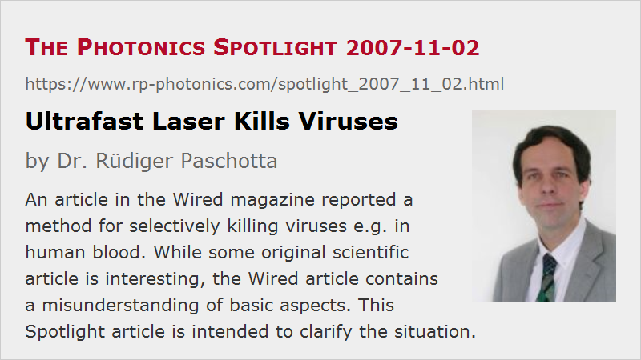

Ultrafast Laser Kills Viruses
Posted on 2007-11-02 as a part of the Photonics Spotlight (available as e-mail newsletter!)
Permanent link: https://www.rp-photonics.com/spotlight_2007_11_02.html
Author: Dr. Rüdiger Paschotta, RP Photonics Consulting GmbH
Abstract: An article in the Wired magazine reported a method for selectively killing viruses e.g. in human blood. While some original scientific article is interesting, the Wired article contains a misunderstanding of basic aspects. This Spotlight article is intended to clarify the situation.

Ref.: A. Madrigal, “Superfast laser turns virus into rubble”, Wired article of 2007-01-11 (no more available); K. T. Tsen et al., “Inactivation of viruses with a very low power visible femtosecond laser”, J. Phys.: Condens. Matter 19, 322102 (2007)
A reader made me aware of an article in the Wired magazine (see the reference above), reporting in a somewhat lurid style the finding that viruses – possibly including the HIV virus – can be destroyed by irradiation with femtosecond laser pulses of moderate peak intensity, which may not harm other biological structures. The excitation of a kind of resonance in the virus appears to be of crucial importance. The Wired article claims that the laser is tuned to such a resonance of the virus, and seems to suggest that this is what makes possible that nice selectivity.
This sounds nice, but also illustrates the difficulties involved in the interpretation of scientific results, and perhaps also the detrimental vagueness in many scientific articles, which can easily mislead people. Closer inspection of a related paper of the main author Prof. Kong-Thon Tsen at Arizona State University (also referenced above) shows that the involved resonance is not one with the optical frequency of the laser, but rather a Raman resonance of the protein shell (capsid) of the virus, with the Raman frequency being of the order of hundreds of gigahertz, far below the optical frequency. The laser's optical spectrum spans a range which is larger than that Raman resonance frequency, making possible the stimulated Raman process with a single laser beam. However, this is actually not a very specific kind of excitation: it should work equally well if the virus capsid had e.g. a 50% lower resonance frequency, and such resonances are anyway very broad, with a bandwidth which is not much smaller than the center frequency. Also, by no means is the laser tuned to a resonance of the virus; the center frequency of the laser should not matter for that excitation. It is not that the mentioned scientific paper would confuse these things, but a lay person reading that can easily have the wrong impression that one could turn a know on that laser until one suddenly hits a sharp resonance, and the virus explodes.
So what would be interesting to know (but doesn't appear to be known) is whether e.g. human blood contains anything else which can be harmed when being irradiated with femtosecond pulses as required for killing viruses. If not, one might envisage a therapy where the HIV patient's blood is fed through some apparatus which does the irradiation. It is conceivable (but by no means sure) that such a treatment, when applied long enough (a few hours, like in a dialysis session?) and perhaps repeatedly (how often?), could help to cure diseases such as HIV or hepatitis. However, it might as well be that killing some viruses in the blood stream would not severely affect a virus population which has a large reservoir somewhere else in the body. So we are in the same position as with many other wonder cures for HIV, cancer, or whatever: some interesting finding is quite different from a working cure.
Interestingly, the Wired article seems to add credibility to the created hopes by citing some other people with statements e.g. concerning the general importance of femtosecond lasers is medicine. It is not clear, however, whether these comments were given in the direct context of the discussed virus cure, or whether the cited people even knew about it. I am sorry to perhaps disappoint some people who “can't wait to see what they do with it next”!
Finally, here is an idea concerning how to make the laser device more specific to the Raman resonance. Rather than using very short pulses with a broadband spectrum, one might exploit overlapping pairs of longer (narrow-band) pulses (e.g. with pulse durations of picoseconds), and tune the difference of their center frequencies to a Raman resonance. That way one would have a knob which can help to better discriminate between different biological entities.
This article is a posting of the Photonics Spotlight, authored by Dr. Rüdiger Paschotta. You may link to this page and cite it, because its location is permanent. See also the RP Photonics Encyclopedia.
Note that you can also receive the articles in the form of a newsletter or with an RSS feed.
Questions and Comments from Users
Here you can submit questions and comments. As far as they get accepted by the author, they will appear above this paragraph together with the author’s answer. The author will decide on acceptance based on certain criteria. Essentially, the issue must be of sufficiently broad interest.
Please do not enter personal data here; we would otherwise delete it soon. (See also our privacy declaration.) If you wish to receive personal feedback or consultancy from the author, please contact him e.g. via e-mail.
By submitting the information, you give your consent to the potential publication of your inputs on our website according to our rules. (If you later retract your consent, we will delete those inputs.) As your inputs are first reviewed by the author, they may be published with some delay.
|  |
If you like this page, please share the link with your friends and colleagues, e.g. via social media:
These sharing buttons are implemented in a privacy-friendly way!